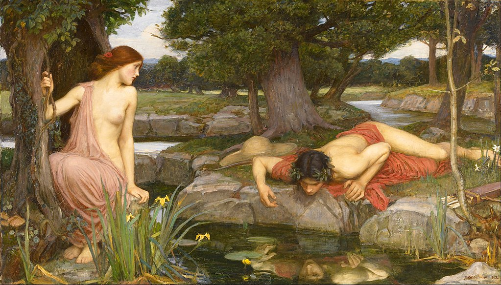
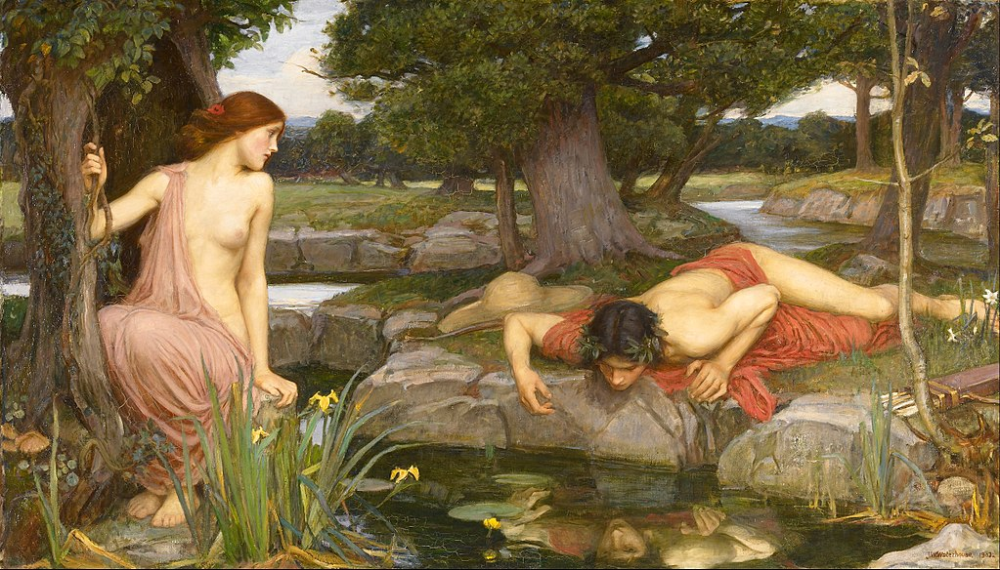

John William Waterhouse
- Nacimiento:
6 de abril de 1849; Rome, Italy
- Fallecimiento:
10 de febrero de 1917; London, United Kingdom
- Género:
Pintura Mitológica, Pintura Literaria
- Campo:
Pintura
- Institución:
Pre-Raphaelite Brotherhood
Desde el inicio tuvo un referente al arte, su padre era pintor, además, nacido en una de las ciudades más influyentes en el arte, Roma. Tenía todas las referencias para consagrarse en el mundo del arte, y así fue. Viajó por todo el mundo donde estudió la historia antigua y los clásicos, a partir de esto, su arte se vio influenciado y modificándose hasta llegar al simbolismo y al art noveau. Durante toda su carrera su arte se vio altamente influenciado por el arte Victoriano, la literatura, la mitología y relatos griegos.